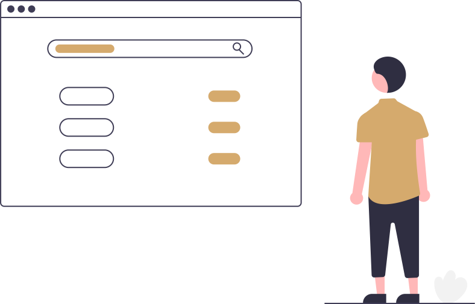

Avocat Dumitrescu Alexandru
Studiu de caz
În lumea dinamică în care trăim azi, prezența digitală nu mai este opțională, ci o necesitate, iar cabinetul individual de Avocat Dumitrescu Alexandru din Turda s-a confruntat recent cu aceasta realitate de creștere a concurenței în domeniul juridic. Astfel avocatul Dumitrescu Alexandru a decis să colaboreze cu agenția digitală pentru avocați SOLON, alegând abonamentul GOLD. Obiectivul principal a fost crearea unei prezențe online profesioniste care să reflecte valorile și expertiza cabinetului, în timp ce atrage noi clienți și fidelizează pe cei existenți.
Implementarea proiectului a inclus dezvoltarea unui logo modern, crearea unui manual de brand, dezvoltarea unui website cu blog, elaborarea unei strategii de marketing, managementul social media și consultanță digitală personalizată prin sesiuni 1:1 lunare.
Sari la 1. Strategie • 2. Implementare • 3. Rezultate • 4. Concluzie
1. Strategie
Prima etapă a colaborării a implicat o sesiune de consultanță digitală, în care echipa SOLON a analizat în detaliu serviciile juridice oferite, tipologia clienților și poziționarea față de competiție. În urma acestei analize, s-au identificat principalele puncte forte ale cabinetului pe care vrem sa le transpunem în mediul online., iar accentul s-a pus pe dezvoltarea unei strategii digitale holistice care să includă toate aspectele necesare: branding, prezență online (social media și website) și optimizare SEO.
Informații proiect
- Tip client: Cabinet Individual
- Locație: Turda
- Tip abonament: GOLD
- Website: https://avocat-alexdumitrescu.ro/
Servicii implementate de  SOLON
SOLON
- Strategie marketing
- Mentenanță 3 profile Social Media
- Facebook, Instagram, LinkedIn
- Research hashtags
- Conturare logo
- Design + print cărți de vizită
- Design + print dosare personalizate
- Manual de brand
- Adresa email personalizate
- Design UI/UX website
- Copywriting website
- Implementare & QA website
- Mentenanță website
- Analytics website
- Optimizare SEO
2. Implementare
Branding
Pentru a reflecta profesionalismul și valorile Cabinetului de Avocatură Dumitrescu Alexandru, agenția SOLON a început procesul de branding cu desenarea logo-ului și crearea unui manual de brand.
Manualul include specificații detaliate pentru utilizarea logo-ului, paleta de culori, tipografia și stilul vizual general al tuturor materialelor de comunicare. Aceste elemente de bază au fost esențiale pentru asigurarea unei identități vizuale coerente și distincte, care să fie îmbrățișată în toate materialele de comunicare și marketing.
Descarcă manualul de brand de aici.
Marketing
Pentru a crește vizibilitatea online a Cabinetului de Avocatură Dumitrescu Alexandru și a atrage un număr mai mare de clienți potențiali, agenția SOLON a elaborat o strategie de marketing digital cuprinzătoare. Aceasta a inclus optimizarea SEO, campanii de content marketing pe blogul website-ului, email newsletter și postări pe rețelele de social media, toate integrate pentru a crea o prezență digitală prietenoasă, coerentă și eficientă.
Optimizare SEO
Pe website s-au selectat și implementat cuvinte-cheie relevante pentru industria juridică, care să fie integrate în paginile principale ale website-ului și în articolele de pe blog. S-a pus accent pe optimizarea on-page, incluzând meta descrieri, tag-uri alt pentru imagini și structurarea corectă a titlurilor și subtitlurilor, pentru a îmbunătăți vizibilitatea în motoarele de căutare.
Campanii de Content Marketing
Blogul website-ului a fost utilizat ca principal canal de content marketing, cu articole de specialitate care răspund întrebărilor frecvente ale clienților potențiali. Temele abordate au inclus aspecte juridice de interes general, studii de caz și ghiduri practice, toate optimizate pentru SEO. Împreuna cu clientul am planificat strategic publicarea conținutului - cu frecvență regulată pentru a menține un flux constant de informații noi și relevante, atrăgând astfel atât noi vizitatori cât și revenirea celor existenți.
Email Newsletter
Echipa SOLON a creat un email newsletter periodic pentru a păstra legătura cu clienții existenți și pentru a converti vizitatorii website-ului în potențiali clienți. Newsletter-ul include articole de pe blog, noutăți despre cabinet, precum și oferte speciale sau servicii noi.
Social Media Management
Pentru a asigura o prezență online activă și relevantă, agenția SOLON a creat și configurat trei profile Social Media pentru Cabinetul Dumitrescu Alexandru, pe platformele Facebook, LinkedIn și Instagram. Fiecare profil a fost personalizat pentru a reflecta identitatea vizuală a cabinetului și a fost integrat într-un plan de comunicare structurat care include postari, videoclipuri și stories.
Optimizare Google MyBusiness
Pentru a maximiza vizibilitatea locală pe Google Maps a Cabinetului de Avocatură Dumitrescu Alexandru, agenția SOLON a optimizat prezența acestuia pe Google MyBusiness, un instrument esențial pentru atragerea clienților din proximitate. Actualizarea completă a profilului Google MyBusiness a fost un pas esențial, asigurându-se că toate informațiile de contact sunt corecte și ușor accesibile.
De asemenea, îmbogățirea descrierii cabinetului, incluzând detalii despre serviciile oferite, specializările avocatului Alexandru Dumitrescu și valorile care definesc activitatea cabinetului. Descrierea a fost redactată strategic, utilizând cuvinte-cheie relevante pentru a îmbunătăți poziționarea în rezultatele căutărilor locale. Nu în ultimul rand, am adaugat imagini profesionale - inclusiv fotografii ale biroului, echipamentului și a logo-ului recent creat. Aceste imagini au fost selectate pentru a oferi potențialilor clienți o impresie vizuală clară și atractivă a cabinetului, contribuind la o percepție de profesionalism și încredere.
Rezultatul acestor acțiuni a fost o prezență pe Google MyBusiness semnificativ îmbunătățită, care a contribuit semnificativ la creșterea vizibilității cabinetului în căutările locale pe Google Maps.
Devoltare website
Pentru a consolida prezența online a Cabinetului de Avocatură Dumitrescu Alexandru, agenția SOLON a implementat un website modern, construit pe platforma WordPress. Website-ul a fost conceput pentru a oferi o experiență de navigare ușor de utilizat și pentru a reflecta profesionalismul și competența cabinetului.
Prima etapă a implicat configurarea inițială a site-ului, incluzând instalarea temei personalizate, care a fost adaptată conform manualului de brand creat în cadrul proiectului. Website-ul a fost structurat în mod intuitiv, cu secțiuni clare pentru prezentarea serviciilor, informații despre avocat, contact și un blog dedicat articolelor juridice.
Funcționalitățile cheie ale website-ului au inclus:
- Formulare de contact optimizate pentru captarea potentialilor clienti
- Integrarea cu Google MyBusiness pentru a facilita accesul la recenzii și direcții din căutările locale
- Blog cu articole de specialitate menite să informeze și să atragă potențiali clienți
- Implementare newsletter prin Brevo
După configurarea inițială și actualizarea conținutului, verificarea funcționalităților tehnice și aplicarea actualizărilor de securitate și plugin-uri. De asemenea, echipa SOLON a gestionat activitățile de optimizare SEO on-page, asigurându-se că fiecare pagină și articol de blog este configurat pentru a obține cele mai bune rezultate în motoarele de căutare.
Consultanță Digitală Personalizată
Pentru a asigura succesul pe termen lung al Cabinetului de Avocatură Dumitrescu Alexandru în mediul digital, agenția SOLON oferă consultanță digitală personalizată prin ședințe lunare 1:1 pe WhatsApp. Această consultanță este continuu adaptată nevoilor clientului și are ca scop principal alinierea proceselor digitale și tacticilor de marketing cu viziunea și obiectivele pe termen lung ale cabinetului. Am aplicat o abordare strategică care a asigurat nu doar atingerea obiectivelor imediate, dar și construirea unei fundații solide pentru creștere sustenabilă în mediul online.
3. Rezultate
Proiectul a fost un succes răsunător, cu un feedback excepțional din partea clientului. Principalele realizări includ:
- Identitate de Brand Consolidată: Am întărit imaginea online a cabinetului, contribuind la o recunoaștere mai bună în piața juridică din județul Cluj
- Creșterea Vizibilității Online: Traficul pe website a ajuns la sute de vizitatori lunar, incepand chiar din prima lună
- Retentie Îmbunătățită: Prezența digitală activă și strategică a dus la o creștere cu 60% a ratei de retentie a clienților
- Feedback Pozitiv: Cabinetul a primit feedback pozitiv atât din partea clienților existenți, cât și a celor noi, evidențiind profesionalismul noii prezențe digitale
Prin introducerea platformei digitale de comunicare, am reușit să să oferim clienților clienților noștri o experiență mai plăcută, eficientă și transparentă. Interacțiunea cu clienții s-a îmbunătățit semnificativ, facilitând comunicarea și accesul la informații de contact relevante.
4. Concluzie
Implementarea serviciilor digitale de către agenția SOLON pentru Cabinetul de Avocatură Dumitrescu Alexandru a fost un succes, îndeplinind și depășind obiectivele stabilite inițial. Prezența online a cabinetului a fost semnificativ îmbunătățită, ceea ce a dus la o creștere a numărului de clienți și la o poziționare mai bună pe piața juridică locală. Lecțiile învățate din acest proiect subliniază importanța unei strategii digitale bine gândite și a unei implementări coerente pentru a obține rezultate sustenabile în mediul online.
Cum te putem ajuta?
SOLON oferă servicii digitale complete care îmbină creativitatea tehnologiei cu rigorile legii.
Development
Website Development
Mobile App Development
API Development
Integrări Personalizate
Audit de securitate
Marketing
Search Engine Optimization (SEO)
Optimizare Google MyBusiness
Social Media Management
Copywriting
Consultanță tehnică
Recomandări unelte digitale
Digitalizare procese business
Instalare hardware & software
Ședințe lunare, Q&A
Vrei să te sunăm noi?
Un coleg din departamentul tehnic va iniția o discuție telefonică în viitorul apropiat.